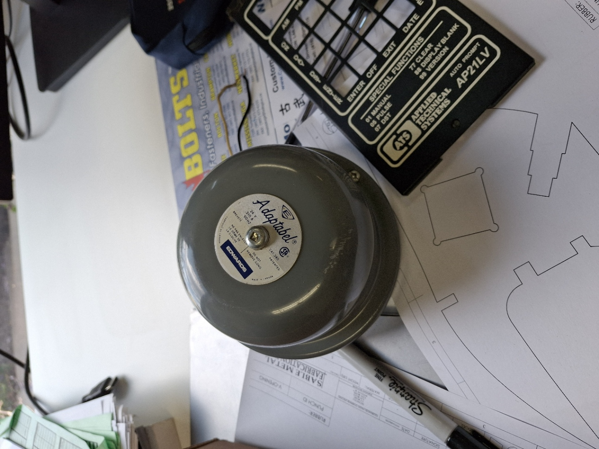
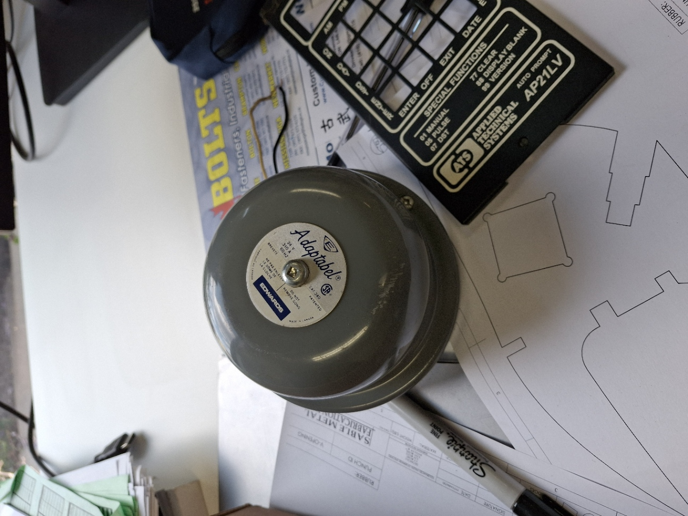

Introduction
Before my term started, the shop used an alarm to signal break times. The system stopped working, and I was tasked with diagnosing the issue. I discovered the circuit board of the programmable clock was broken. Replacing it would cost over $300, so I looked for a more affordable alternative.
 

Research
I explored alternatives and decided to use an Arduino ESP32. The shop bell ran on 24V AC but could also work with DC, so I reused the transformer from the old clock. A relay was added to control the bell and protect the ESP32 from high voltage. I simulated the circuit in Wokwi before making purchases, testing different ESP32 pins. For software, I used the built-in RTC and resynced it every four hours. I also developed a custom app in MIT App Inventor to manually set alarms and control the bell remotely.


Shopping List
I created a shopping list with approximate costs. Key components included:
- ESP32 microcontroller
- Relay module
- Breadboard for testing
- Wire splitters and connection blocks
The total came to under $100, saving the shop about $200 compared to replacing the clock. All components were sourced from Sayal Electronics.

Installation
Installation was the most labor-intensive part. I cut and prepared ~25 feet of wire to connect the control unit (“brain”) to the bell. The wire came in a casing with eight strands, which I separated and re-braided into groups of four. I mounted the control unit on the wall and installed the bell on the ceiling for maximum coverage.
Results
After a full day of testing, the buzzer worked reliably. A bug that caused the alarm to trigger twice was quickly fixed. By the end of my internship, the shop fully adopted the new system, which continues to run smoothly today.